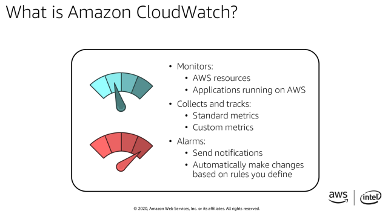

AWS Build to Scale
Roy Canseco
2020-10-30
Context
AWS is special in how flexible it is compared to most cloud providers. However, we, the clients are paying for this flexibility.
Other cloud providers actually provide cheaper products with as much functionality but with less flexibility. It is therefore up to us, the clients, to leverage this flexibility by configuring AWS workloads to our advantage. The corollary to this, if we fail to configure properly, we will be paying more, or getting less.
Big Idea
We look to AWS as to how to iteratively build a generic web application that will make the most of the AWS flexibility and give us the most bang for our buck.
It turns out that AWS has a 4-step process.
- Deploy a simple your web application code in an EC2 instance, your database in a block storage, and your static files into an S3 bucket.
- Replace your block storage with RDS
- Put in cloud watch, a load balancer, and an auto scaling group of EC2 instances
- Add cloud formation to be able to convert your infrastructure layout to code.
This is taken from
AWS Public Sector Summit Online / Breakout Sessions / ...
Building in the cloud
Patrick Do, Technical Trainer, AWS
If we are able to fix the storage issue through S3 or EFS, then we will be completing step 2.
Benefits
Each step delivers unique advantages 1. Cheap storage that scales as your files grow 2. A database that can be managed and secured separately from the web application 3. A fleet of CPU instances that balances load between them and increases/ decreases their number as needed 4. A way to export and store all the infrastructure configuration for quick and easy redeployment
This will bring us to an Optimized Lift and Shift status as described as the halfway point to total cost optimization, which was also described in AWS Summit 2020, as mentioned in my Oct 29 report.
There was a report of an institution in India, EdTech Impartus, that launched online education in AWS for 90 schools, equivalent to 530,000 students and 32,000 teachers during the recent pandemic months. It is possible to setup AWS for all PSHS campuses well.
Details
Situationer
Right now our moodledata are inside the Instance Store (ephemeral storage). This is fast, but expanding this is very costly. Also this hinders us from doing EC2 autoscaling since the compute node has the user data as well. Ideally the static data will be in the S3 bucket, which is also something we are not using at this point.
On the other hand, our database is already well placed and is separate from the webserver instance.
### Step 1 of 4
This diagram is how most web applications in AWS will start. We haven't fully reached this stage yet since we haven't separated our static content from our compute instance.
This implies that we can manage our static content apart from the compute instance. For our particular case, this can mean that we put our moodledata folder inside a block storage. We can also use a moodle plugin to get static content from within moodledata block storage and store them in the object bucket.
Once we fully achieve this, we should be able to scale our storage as needed.
Step 2 of 4
This is stage 2, where we configure the database in a way that it can be managed apart from our compute instance.
With regards to the database, our current setup fully satisfies this best practice.
Step 3 of 4
This is stage 3, where we have slimmed down our compute instance to do just computing functions. Both data files and databases are already separated from it. We can now create a fleet of compute instances that we can scale up or scale down based on our present need.
We are not doing this at all as of now. This part is where AWS excels. Not being able to do this takes out a lot of the advantages that AWS has over cheaper cloud platforms.
This will need that have the following to work: 1. a load balancer 2. a fleet of compute instances 3. a monitor to signal increasing or decreasing of compute instances
The following picture shows the AWS load-balancer.
The following picture shows a fleet of compute instances that only runs 2 instances during low usage times and up to 10 instances during peak usage times.
The following picture describes the monitor AWS uses to trigger alarms and autoscaling (increase or decrease) of compute instances. It was mentioned in the AWS Summit 2020 that they recommend increasing compute capacity once 60% is already reached. They also recommend decreasing capacity once utilization falls to 20%.

Step 4 of 4
This is stage 4, where we describe our AWS configuration in a script and save it. This means that if we want to set everything up again, we can do so easily just be running our script. This makes sure that our configuration is correct every time.
This uses AWS Cloud Formation templates.
Next Steps
There are various things that can go wrong in putting together server infrastructure in the cloud. That is why it is recommended to iterate from simple to a complex architecture. Through every stage, the reliability, ease of management and total cost becomes better and better.
It would be good to be proactive in this regard. At this point, PSHS needs KHub to fully reach stage 2. The key component to this is being able to separate static content from the compute node. This is very much doable.
As soon stage 2 is reached, it would be advisable to explore and prototype a solution to reach Stage 3 so as to be future ready.
It seems that OED/ Nephila is poising to integrate all KHubs in the future. This is evidenced by the current setup where there is only 1 database for all campuses. This means that in case we want to separate the campuses, we will not find it that easy to do because campuses are sharing database tables. Also, from today's meeting, their plan is to have 1 object bucket for the static content of all campuses. All these point to integrating all campus KHubs together. When that happens, reaching the stage 3 architecture is a must to be feasible. Stage 4 will be necessary to maintain such a configuration in the long run.